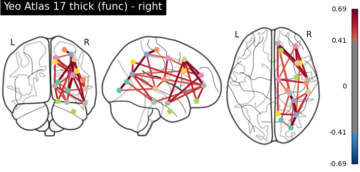
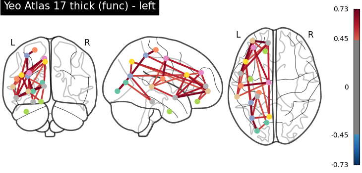

Note
Click here to download the full example code or to run this example in your browser via Binder
9.4.8. Comparing connectomes on different reference atlases¶
This examples shows how to turn a parcellation into connectome for
visualization. This requires choosing centers for each parcel
or network, via nilearn.plotting.find_parcellation_cut_coords for
parcellation based on labels and
nilearn.plotting.find_probabilistic_atlas_cut_coords for
parcellation based on probabilistic values.
In the intermediary steps, we make use of
nilearn.maskers.NiftiLabelsMasker and
nilearn.maskers.NiftiMapsMasker to extract time series from nifti
objects using different parcellation atlases.
The time series of all subjects of the brain development dataset are concatenated and
given directly to nilearn.connectome.ConnectivityMeasure for
computing parcel-wise correlation matrices for each atlas across all subjects.
Mean correlation matrix is displayed on glass brain on extracted coordinates.
# author: Amadeus Kanaan
Note
If you are using Nilearn with a version older than 0.9.0,
then you should either upgrade your version or import maskers
from the input_data module instead of the maskers module.
That is, you should manually replace in the following example all occurrences of:
from nilearn.maskers import NiftiMasker
with:
from nilearn.input_data import NiftiMasker
9.4.8.1. Load atlases¶
from nilearn import datasets
yeo = datasets.fetch_atlas_yeo_2011()
print('Yeo atlas nifti image (3D) with 17 parcels and liberal mask is located '
'at: %s' % yeo['thick_17'])
Out:
Yeo atlas nifti image (3D) with 17 parcels and liberal mask is located at: /home/circleci/nilearn_data/yeo_2011/Yeo_JNeurophysiol11_MNI152/Yeo2011_17Networks_MNI152_FreeSurferConformed1mm_LiberalMask.nii.gz
9.4.8.2. Load functional data¶
data = datasets.fetch_development_fmri(n_subjects=10)
print('Functional nifti images (4D, e.g., one subject) are located at : %r'
% data['func'][0])
print('Counfound csv files (of same subject) are located at : %r'
% data['confounds'][0])
Out:
Functional nifti images (4D, e.g., one subject) are located at : '/home/circleci/nilearn_data/development_fmri/development_fmri/sub-pixar123_task-pixar_space-MNI152NLin2009cAsym_desc-preproc_bold.nii.gz'
Counfound csv files (of same subject) are located at : '/home/circleci/nilearn_data/development_fmri/development_fmri/sub-pixar123_task-pixar_desc-reducedConfounds_regressors.tsv'
9.4.8.3. Extract coordinates on Yeo atlas - parcellations¶
from nilearn.maskers import NiftiLabelsMasker
from nilearn.connectome import ConnectivityMeasure
# ConenctivityMeasure from Nilearn uses simple 'correlation' to compute
# connectivity matrices for all subjects in a list
connectome_measure = ConnectivityMeasure(kind='correlation')
# useful for plotting connectivity interactions on glass brain
from nilearn import plotting
# create masker to extract functional data within atlas parcels
masker = NiftiLabelsMasker(labels_img=yeo['thick_17'], standardize=True,
memory='nilearn_cache')
# extract time series from all subjects and concatenate them
time_series = []
for func, confounds in zip(data.func, data.confounds):
time_series.append(masker.fit_transform(func, confounds=confounds))
# calculate correlation matrices across subjects and display
correlation_matrices = connectome_measure.fit_transform(time_series)
# Mean correlation matrix across 10 subjects can be grabbed like this,
# using connectome measure object
mean_correlation_matrix = connectome_measure.mean_
# grab center coordinates for atlas labels
coordinates = plotting.find_parcellation_cut_coords(labels_img=yeo['thick_17'])
# plot connectome with 80% edge strength in the connectivity
plotting.plot_connectome(mean_correlation_matrix, coordinates,
edge_threshold="80%",
title='Yeo Atlas 17 thick (func)')
Out:
<nilearn.plotting.displays._projectors.OrthoProjector object at 0x7f9540c4e640>
9.4.8.4. Plot a directed connectome - asymmetric connectivity measure¶
In this section, we use the lag-1 correlation as the connectivity measure, which leads to an asymmetric connectivity matrix. The plot_connectome function accepts both symmetric and asymmetric matrices, but plot the latter as a directed graph.
import numpy as np
# Define a custom function to compute lag correlation on the time series
def lag_correlation(time_series, lag):
n_subjects = len(time_series)
n_samples, n_features = time_series[0].shape
lag_cor = np.zeros((n_subjects, n_features, n_features))
for subject, serie in enumerate(time_series):
for i in range(n_features):
for j in range(n_features):
if lag == 0:
lag_cor[subject, i, j] = np.corrcoef(serie[:, i],
serie[:, j])[0, 1]
else:
lag_cor[subject, i, j] = np.corrcoef(serie[lag:, i],
serie[:-lag, j])[0, 1]
return np.mean(lag_cor, axis=0)
# Compute lag-0 and lag-1 correlations and plot associated connectomes
for lag in [0, 1]:
lag_correlation_matrix = lag_correlation(time_series, lag)
plotting.plot_connectome(lag_correlation_matrix, coordinates,
edge_threshold="90%",
title='Lag-{} correlation'.format(
lag))
- 
- 
Out:
/home/circleci/miniconda3/envs/testenv/lib/python3.8/site-packages/nilearn/plotting/displays/_projectors.py:166: UserWarning:
'adjacency_matrix' is not symmetric. A directed graph will be plotted.
9.4.8.5. Load probabilistic atlases - extracting coordinates on brain maps¶
dim = 64
difumo = datasets.fetch_atlas_difumo(
dimension=dim, resolution_mm=2, legacy_format=False
)
9.4.8.6. Iterate over fetched atlases to extract coordinates - probabilistic¶
from nilearn.maskers import NiftiMapsMasker
# create masker to extract functional data within atlas parcels
masker = NiftiMapsMasker(maps_img=difumo.maps, standardize=True,
memory='nilearn_cache')
# extract time series from all subjects and concatenate them
time_series = []
for func, confounds in zip(data.func, data.confounds):
time_series.append(masker.fit_transform(func, confounds=confounds))
# calculate correlation matrices across subjects and display
correlation_matrices = connectome_measure.fit_transform(time_series)
# Mean correlation matrix across 10 subjects can be grabbed like this,
# using connectome measure object
mean_correlation_matrix = connectome_measure.mean_
# grab center coordinates for probabilistic atlas
coordinates = plotting.find_probabilistic_atlas_cut_coords(maps_img=difumo.maps)
# plot connectome with 85% edge strength in the connectivity
plotting.plot_connectome(mean_correlation_matrix, coordinates,
edge_threshold="85%",
title='DiFuMo with {0} dimensions (probabilistic)'.format(dim))
plotting.show()
Out:
/home/circleci/miniconda3/envs/testenv/lib/python3.8/site-packages/nilearn/_utils/cache_mixin.py:304: UserWarning:
memory_level is currently set to 0 but a Memory object has been provided. Setting memory_level to 1.
/home/circleci/miniconda3/envs/testenv/lib/python3.8/site-packages/nilearn/maskers/nifti_maps_masker.py:460: UserWarning:
Persisting input arguments took 1.21s to run.
If this happens often in your code, it can cause performance problems
(results will be correct in all cases).
The reason for this is probably some large input arguments for a wrapped
function (e.g. large strings).
THIS IS A JOBLIB ISSUE. If you can, kindly provide the joblib's team with an
example so that they can fix the problem.
Total running time of the script: ( 1 minutes 30.845 seconds)
Estimated memory usage: 1608 MB